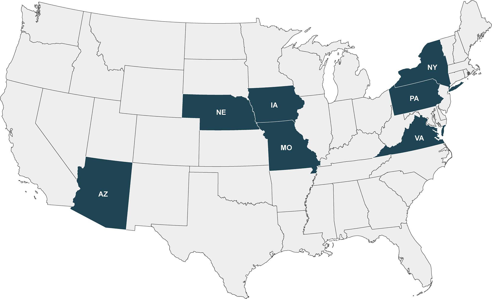

AIIRA's Institutions and Stakeholder Organizations
AIIRA Institutions & Expertise


| Institution | Artificial Intelligence (AI) | Cyber-Infrastructure (CI) | Data-Driven Agriculture | Adoption | Education & Outreach |
|---|---|---|---|---|---|
| Iowa State University | |||||
| Carnegie Mellon University | |||||
| University of Arizona | |||||
| University of Missouri | |||||
| George Mason University | |||||
| University of Nebraska-Lincoln | |||||
| New York University | |||||
| Iowa Soybean Association |
Founding Stakeholder Organizations
(Organizations sorted by name in alphabetical order)
Industry
8 Organizations
Start-Ups
8 Organizations
Government
4 Organizations
- Federal Statistical Research Data Center @ Iowa State University
- Iowa Economic Development Authority
- Oak Ridge National Lab
- United States Department of Agriculture - Agricultural Research Service (USDA-ARS)
Commodity Groups
3 Organizations
Centers, NGOs, Ag organizations
11 Organizations
- Agriculture Genome to Phenome Initiative (AG2PI)
- Center for Resilience in Agricultural Working Landscapes (CRAWL) @ University of Nebraska-Lincoln
- Cornell AgriTech and Ag Experiment Station
- CyVerse
- Genomes to Fields Initiative (G2F)
- Grow Pittsburgh
- NSF Midwest Big Data Hub NAPPN
- NSF TRIPODS Institute @ University of Arizona
- NSF/USDA AI Institute for Ag (AIFARMS) @ University of Illinois Urbana-Champaign
- NSF/USDA AI Institute for Ag (AIFS) @ University of California, Davis
- The Data and Software Carpentries
AI Institute for Resilient Agriculture (AIIRA) is supported by the
National Science Foundation (NSF) and
United States Department of Agriculture -
National Institute of Food and Agriculture
award #2021-67021-35329
Copyright © 2021-2022 | AI Institute for Resilient Agriculture (AIIRA)